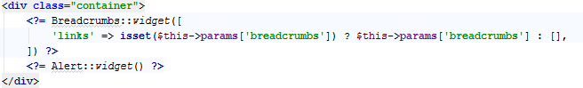
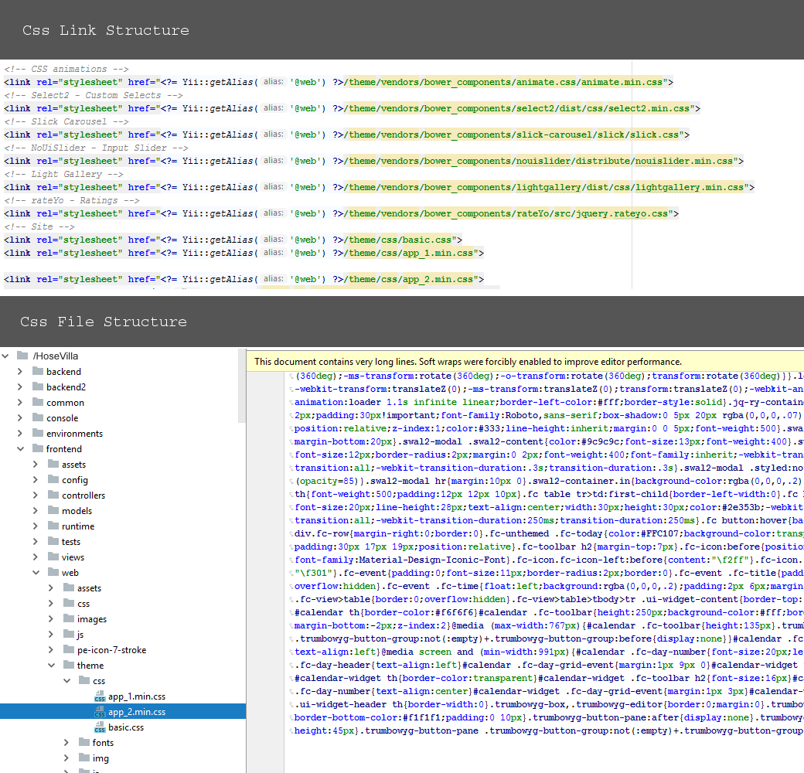
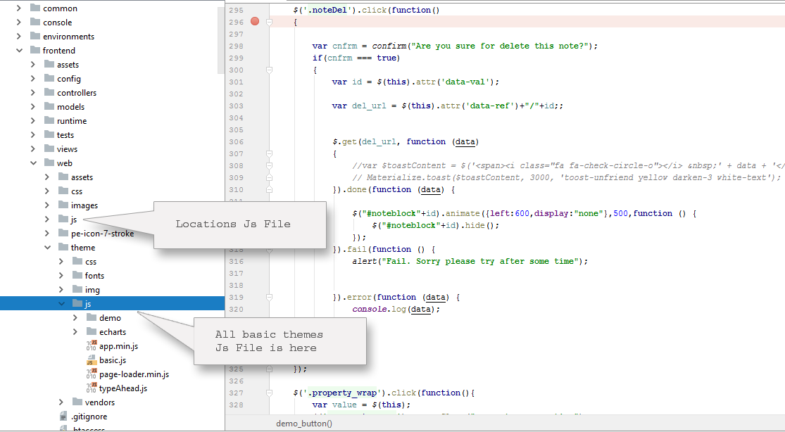
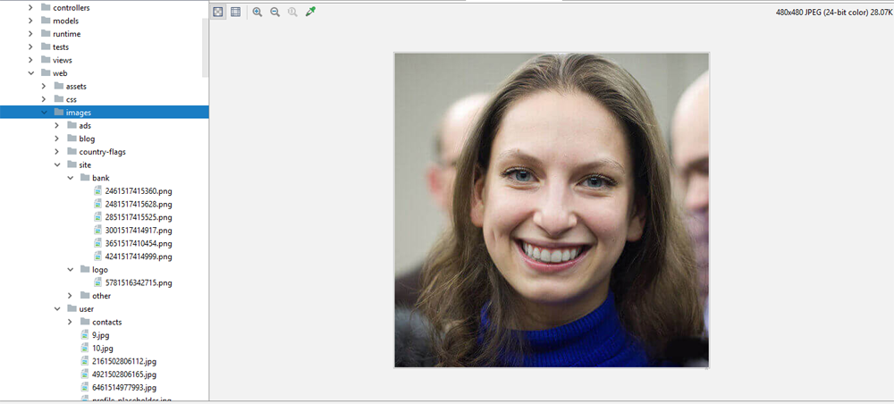

Created: 11/March/2018
By: Mayank Singh
Email: ambecode.com@gmail.com
Thank you for purchasing my theme. If you have any questions that are beyond the scope of this help file, please feel free to email via my user page contact form here. Thanks so much!
This theme is a fixed layout with one columns. All of the information within the main content area is nested
within a div with an class of "container". this script is develop under Yii2 framework so all main content is
render under
and alert information is display under this section

so main layout of whole script is as below
If you would like to edit the color, font, or style of any elements , you can edit css file
go to: root/frontend/web/theme/css
change css style according to you. my script is easy to customise because we use bootstrap for styling. you can easily change style of this script
I'm using following CSS files in this theme. The first one is a generic reset file. Many browser interpret the default behavior of html elements differently. By using a general reset CSS file, we can work round this. This file also contains some general styling, such as anchor tag colors, font-sizes, etc. Keep in mind, that these values might be overridden somewhere else in the file.my css file stucture is here
This theme imports following Javascript files.
HouseVilla.SQL file and go
I've used the following images, icons or other files as show below. 
we use mysql Server version: 10.0.17-MariaDB,
you need to export database to your server using following step:
Quik is develope under yii2 framework, you can mail us any time bylancertheme@gmail.com, and here is some link i wish its helpful for you
We used Yii2 Advance template for develop this classified script.
Yii give you two totally different part of application. here is path for your frontend user and admin
:-
Demo Username: ganpat
Demo Password: 123456
Demo Username: demo
Demo Password: demo
Admin Username: admin
Admin Password: 123456
Once again, thank you so much for purchasing this theme. As I said at the beginning, I'd be glad to help you if you have any questions relating to this theme. No guarantees, but I'll do my best to assist. If you have a more general question relating to the themes on ThemeForest, you might consider visiting the forums and asking your question in the "Item Discussion" section.
Mayank Singh